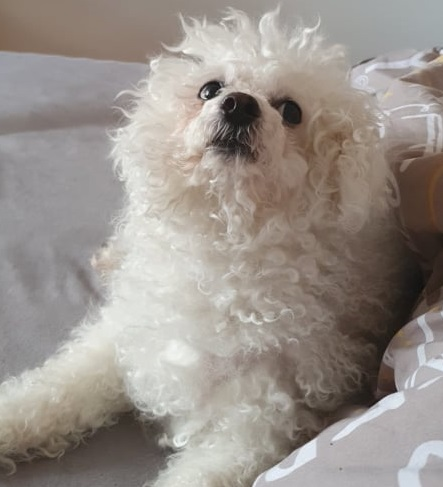
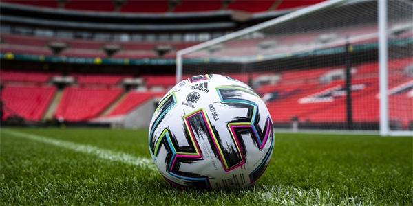
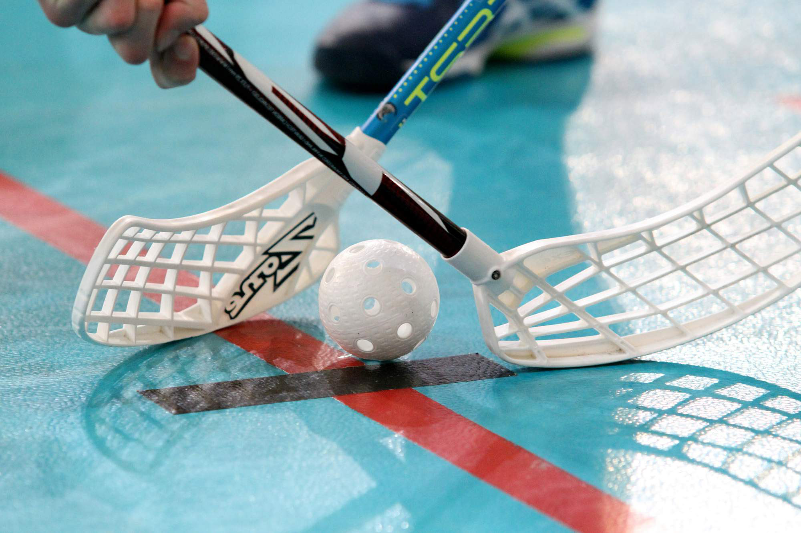

tohle je naše webová stránka pro detekci robota. Autoři:
@Wittner,
@Valíček,
@Klimková
Úvod
Statistiky
Databáze
Přidání známek
Dobrý den, tohle je naše webová stránka, která slouží jako pozadí pro běh a detekci bota. Bot využívaný na naší stránce zapisuje záznamy do databáze, díky formuláři, který se nachází na stránce přidání známek.
Jsme studenti 3. Ročníku oboru Informační Bezpečnost na VUT v Brně. A tohle je skromná ukázka našeho webu. Mezi naše koníčky patří například fotbal, florbal, hraní PC her a procházky se psem.
Tohle je Alexův pes Myšák je to rasou bišonek, ovšem duší bojový tygr. Rád s ním chodí na delší procházky a i přes jeho krátký vzrůst, je schopen vydržet dlouhé vzdálenosti i rychlý běh. Rychlý běh už ovšem omezují, jelikož jak on, tak i Alex, začínají mít svá nejlepší léta za sebou.
Fotbal hraje od svých 6 let a vystřídal zde celou řadu pozicí, začínal na pozici záložníka a později hrál na útočném křídle. Během stárnutí se ovšem jeho pozornost ubírala na jeho současně nejoblíbenější pozici a tou je pozice brankáře, během let tedy trénoval a byl brankářem společně s jeho kamarádem Tomášem, který o místo jedničky také usiloval a tak docházelo k velmi častému střídání na této pozici. Poslední rok ve věkové kategorii žáci Matěj velmi často hrával na pozici pravého obránce, právě v případě kdy byl jeho rival na pozici brankáře. V součastnosti z důvodu nedostatku času a dlouhého dojíždění, hraje fotbal pouze rekreačně.
Florbal hrála krátkou dobu a celou dobu pouze rekreačně, začala s ním na druhém stupni ZŠ, zhruba rok aktivně trénovala s týmem, ovšem žádného soutěžního zápasu s ním se nikdy nezúčastnila, zápasovou atmosféru zažila pouze na školních turnajích. V součástnosti její florbalovou aktivitou je to, že se s pár známými jednou za čas sejdou a zahrají si pár zápasů 3 proti 3.
